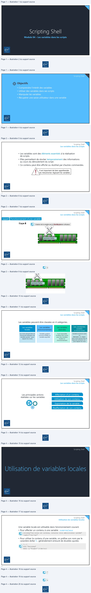
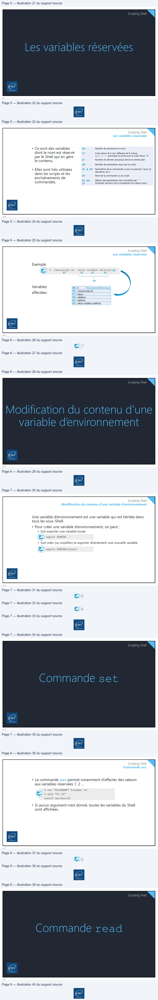
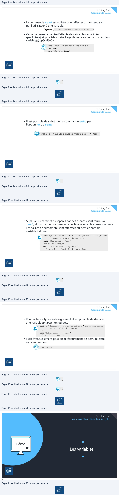

Transcription du document du Drive TSSR. La mise en forme est adaptée au Web ; les compléments IA du portail sont présentés séparément.
Module 04 – Les variables dans les scripts
1
Scripting Shell
Objectifs
• Comprendre l'intérêt des variables
• Utiliser des variables dans ses scripts
• Manipuler les variables
• Récupérer une saisie utilisateur dans une variable
2
Scripting Shell
Les variables dans les scripts
• Les variables sont des éléments essentiels à la réalisation
de scripts.
• Elles permettent de stocker temporairement des informations
au cours du déroulement du script.
• Ce contenu peut être affiché ou réutilisé par d’autres commandes.
Il est important de bien appréhender
les mécanismes régissant les variables.
3
Scripting Shell
Les variables dans les scripts
rappel
Fonctionnement d’une variable
Etape 2
Etape 3
Etape 4
Etape 5
Etape 1
Lecture de la variable prenom
z
Modification de la variable prenom
Lecture de la variable prenom
Libérer la mémoire une fois la variable inutile
Création de la variable avec le nom du premier utilisateur
Romain Sofia
prenom=Sofia
4
Scripting Shell
Les variables dans les scripts
• Les variables sont des éléments essentiels à la réalisation
de scripts.
• Elles permettent de stocker temporairement des informations
au cours du déroulement du script.
• Ce contenu peut être affiché ou réutilisé par d’autres commandes.
Il est important de bien appréhender
les mécanismes régissant les variables.
3
Scripting Shell
Les variables dans les scripts
rappel Fonctionnement d’une variable
EtapeEtapeEtapeEtape 23451 CréationLectureLectureModificationLibérer ladededemémoirelalaladevariablevariablevariablela variableuneprenomprenomavecfoiszprenomlela RomainSofianomvariabledu premierinutile utilisateur Etape
prenom=Sofia
4WE
ENAS
SOM ME
Scripting Shell
Les variables dans les scripts
Les variables peuvent être classées en 4 catégories.
Les constantes
Les variables
réservées
Les variables
locales
Les variables
d’environnement
(variables
en lecture seule)
Variable en lecture seule
Les noms doivent être en
minuscule (utilisation de
Variable système
(comme HOME) ou
Il est impossible
d’utiliser leurs noms
doubles quotes “ pour
variable exportée
pour des variables
séparer les mots)
via declare –r <var>. Leurs noms doivent être en majuscule (utilisation de “_”
locales ou
d’environnement
pour séparer les mots
5
Scripting Shell
Les variables dans les scripts
Affectation d’un contenu
Les principales actions
réalisées sur les variables
Utilisation de son contenu
Exportation de la variable
Réaffectation de son contenu
6
D
ES
DE
DE
DE)
#0
Lia:
Scripting Shell
7
Scripting Shell
Utilisation de variables locales
Une variable locale est utilisable dans l’environnement courant. • Pour affecter un contenu à une variable : nom=valeur
errormsg="une erreur est survenue, contactez votre administrateur système" logdir="/var/log/"
• Pour utiliser le contenu d’une variable, on préfixe son nom par le
caractère dollar $ , généralement entouré de doubles quotes.
[...] echo "$errormsg" mkdir –p "$logdir" 2>/dev/null
8
(wr)
nay

Scripting Shell
9
Scripting Shell
Les variables réservées
$$ Numéro du processus en cours
$? Code retour (0 si vrai, different de 0 si faux) exit 2 -> provoque la sortie avec le code retour “2”
$! Numéro du dernier processus lancé en arrière-plan
• Ce sont des variables
dont le nom est réservé
par le Shell qui en gère
le contenu.
$# Nombre de paramètres reçus par le script
$1 à $9 Paramètres de la commande (1 pour le premier, 2 pour le deuxième, etc.)
$0 Nom de la commande ou du script
• Elles sont très utilisées
dans les scripts et les
enchaînements de
commandes.
Valeurs des paramètres reçus encadrés par “ “ .
Certaines versions Unix concatènent les valeurs avec *.
$@ ou $*
10
Scripting Shell
Les variables réservées
9
Scripting Shell
Les variables réservées
• Ce sont des variables $$ Numéro du processus en cours
dont le nom est réservé $? Code retour (0 si vrai, different de 0 si faux)
par le Shell qui en gère exit 2 -> provoque la sortie avec le code retour “2”
le contenu. $! Numéro du dernier processus lancé en arrière-plan
$# Nombre de paramètres reçus par le script
$1 à $9 Paramètres de la commande (1 pour le premier, 2 pour le • Elles sont très utilisées
dans les scripts et les deuxième, etc.) $0 Nom de la commande ou du script
enchaînements de
commandes. $@$* ou ValeursCertainesdesversionsparamètresUnix reçusconcatènentencadréslesparvaleurs“ “ . avec *.
10A
| $$ | Numérodu processusencours |
| $? | Code retour (0 sivrai, different de 0 sifaux) exit 2 -> provoquela sortie avec le code retour “2” |
| $! | Numérodu dernier processuslancéenarrière-plan |
| $# | Nombrede paramètresreçuspar le script |
| $1 à $9 | Paramètresde la commande(1 pour le premier, 2 pour le deuxième, etc.) |
| $0 | Nom de la commandeoudu script |
| $@ ou $* | Valeursdes paramètresreçusencadréspar “ “ . Certainesversions Unix concatènentles valeursavec *. |
Scripting Shell
Les variables réservées
Exemple
$ ./monscript.sh valun valdeux valtrois
$# $0
$1 $2 $3
$@
Variables
affectées
$# 3 Trois paramètres reçus $0 ./monscript.sh $1 valun $2 valdeux $3 valtrois $@ valun valdeux valtrois
11
Scripting Shell
12
Scripting Shell
Les variables réservées
Exemple
$1$ ./monscript.sh$0 valun valdeux$2 valtrois$3 $#
$@
Variables $# 3 Trois paramètres reçus
affectées $0$1 ./monscript.shvalun
$2 valdeux
$3 valtrois
$@ valun valdeux valtrois
11
Scripting Shell
Modification du contenu d’une
variable d’environnement
12N
End
| $# | 3 Trois paramètresreçus |
| $0 | ./monscript.sh |
| $1 | valun |
| $2 | valdeux |
| $3 | valtrois |
| $@ | valunvaldeuxvaltrois |
Scripting Shell
Modification du contenu d’une variable d’environnement
Une variable d’environnement est une variable qui est héritée dans
tous les sous-Shell.
• Pour créer une variable d’environnement, on peut :
• Soit exporter une variable locale
export NOMVAR
• Soit créer (ou modifier) et exporter directement une nouvelle variable
export NOMVAR=valeur
13
Scripting Shell
Commande set
14
NY
©)
©
Scripting Shell
Commande set
• La commande set permet notamment d’affecter des valeurs aux variables réservées 1, 2 ...
$ set "$LOGNAME" $(uname -n) $ echo "$1 $2" user20 serveur102
• Si aucun argument n’est donné, toutes les variables du Shell
sont affichées.
15
Scripting Shell
Commande read
16
i>
(2)

Scripting Shell
Commande read
• La commande read est utilisée pour affecter un contenu saisi par l’utilisateur à une variable.
Read [options] <variable(s)> Syntaxe
• Cette commande génère l’attente de saisie clavier validée
(par Entrée) et procède au stockage de cette saisie dans la (ou les)
variable(s) spécifiée(s).
echo "Veuillez entrer votre nom : " read nom echo "Bonjour $nom"
17
Scripting Shell
Commande read
• Il est possible de substituer la commande echo par l’option –p de read.
read –p "Veuillez entrer votre nom : " nom
18
LS |
(6— >)\
Scripting Shell
Commande read
• Si plusieurs paramètres séparés par des espaces sont fournis à read, alors chaque mot saisi est affecté à la variable correspondante. Les saisies en surnombre sont affectées au dernier nom de variable indiqué.
read –p " Saisissez votre nom et prénom : " nom prenom
Thouin Frédéric dit penthium echo "Nom saisi : $nom " Nom saisi : Thouin echo "Prénom saisi : $prenom " Prénom saisi : Frédéric dit penthium
19
Scripting Shell
Commande read
• Pour éviter ce type de désagrément, il est possible de déclarer
une variable tampon non utilisée.
read –p " Saisissez votre nom et prénom : " nom prenom tampon
Thouin frédéric dit penthium […] echo "Prénom saisi : $prenom " Prénom saisi : frédéric
• Il est éventuellement possible ultérieurement de détruire cette
variable tampon
unset tampon
20
NN
(2)
=)
aan
Scripting Shell
Les variables dans les scripts
Démo
21
7
|
©
eni
